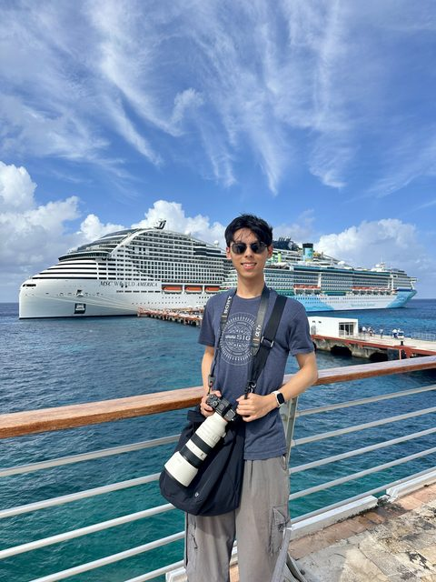

Hi! I'm a fourth-year undergraduate at the Georgia Institute of Technology studying Mathematics. This past summer I was a Quantitative Trading Intern at Susquehanna International Group (SIG) in Chicago. I enjoy photography, writing, reading, listening to music, and bouldering.
I am currently on an exchange semester at the Hong Kong University of Science and Technology (HKUST).
Research
I was fortunate to work with Prof. Yongxin Chen and Prof. Amirali Aghazadeh. My research centers on reasoning about machine learning from mathematical first principles, with a particular focus on algorithmic game theory, optimal transport, and applications to finance. Previously, I have worked on structure-preserving generative models, including diffusion on Riemannian manifolds, normalizing flows, geometric flow matching, sampling acceleration for discrete processes, and finite-sample convergence for Sequential Monte Carlo on non-log-concave targets.
My current focus is on sequential minimax games and their connections to martingale optimal transport, work that appeared at the ICML 2026 NExTGame Workshop. I also work on uncertainty quantification for neural surrogates of Wasserstein gradient flows. My earlier work on entropic martingale optimal transport appeared at the ICLR 2026 Workshop on Advances in Financial AI.
I am also interested in differential geometry, options pricing, and high-dimensional probability.
Publications
- E. Chen. "Sequential Minimax Games as Stacked Martingale Optimal Transport". International Conference on Machine Learning (ICML) NExTGame Workshop, 2026.
- E. Chen. "Entropically Regularized Martingale Optimal Transport with L1 Relaxation". International Conference on Learning Representations (ICLR) Workshop on Advances in Financial AI, 2026. paper
Contact
ec [at] gatech [dot] edu / linkedin